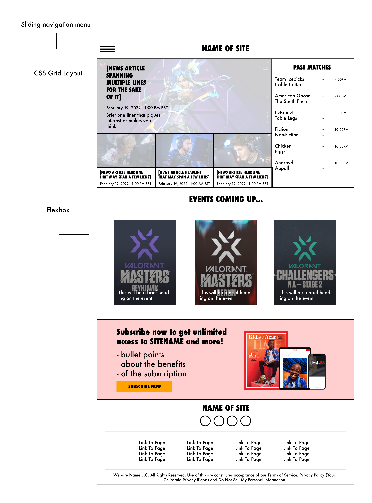

Appendices
Sitemap
Home - Desktop
Home-Mobile

News

The story being told by my website will follow the Valorant Esport. Valorant is a tactical first-person shooter video game and the site will explore the news and results revolving around this event. The structure of the website is inspired by TIME.com and will be implemented with the CSS grid method which will allow for easy organizing of elements and placement of elements as the window changes dimensions.
The two inspirations for this website are vlr.gg, and TIME.com. I enjoy the barebones aspect of information that vlr.gg provides in results and news about teams and matches. TIME.com is a benchmark I can use for a website that is built around providing news in a fully responsive design. They are a contemporary world-news media organization with tried and true methods as to disseminating information.
Alternative Text for Images
Alternative text is implemented for all images in the main body explaining the
photo and what it shows. For twitter posts, it briefly summarizes the tweet.
There is also alt text to identify the menu icon in the header as well as the
social media icons in the footer.
Colour Contrast
Attention to detail has been paid with regards to ensuring all elements on the
page have sufficient contrast with the background colour it falls in.
Headings
For each section of each individual webpage I outlined the headings in a hierarchy.
h1 tags were expressly only used for a main title on the page, otherwise h2 tags
were used if there were multiple headings of the same hierarchy. Any sub-headings
were given the appropriate header tags h3, h4, etc.
Mobile Compatibility
The website was designed with a mobile-first approach for a screen size with a
soft intended viewing width of 320px. From there as the webpage is scaled up in
width, a media queries is set at 1024px and above. The website uses CSS grids
so it is easy to scale up the elements on the webpage.
Content Formatting
The goal with the layout of the website is to provide modular sections that are
brief and easy to skim through. This is evident on the home page with distinct
sections that the user can click which will send them to the various parts of
the website (news, events, match information, subscription page, etc).
Page Layout
The layout of the pages has been focused on to provide only necessary information
pertaining to the goal of the page. The homepage displays information from all
parts of the website in small sections. The goal of the homepage is to provide
a summary of the content available around the Valorant Esports scene. As you
drill down into the news, matches, events, subscribe page, the goals of those
pages are to provide information explicitly about those topics.
Laying out the information in modular sections using CSS grid made it personally
easier to keep a mind-map of how the content should be laid out and I believe it
shows as each piece of the individual webpages has a defined and clear space
that it uses.
Loading data into HTML using Javscript
The two methods I learned to implement data into HTML was through Handlebars JS
and by interacting with the DOM. For HandlebarsJS, I wanted to implement HTML
into the index.html and read the official documentation for HandlebarsJS on how
to do so with partial blocks. I also learned to load data by finding elements
on the webpage based off class name and id and assigning values from objects
loaded into the scripts. For both methods I loaded data objects and adapted it
to fit into my use case.
Tournament Brackets
Implementing tournament brackets was necessary for an esports site as it covers
tournaments with matches and I needed to find a way to implement a tournament
bracket. There was a solution hosted on CodePen that used an unordered list and
through CSS styling designed it to look like a tournament bracket. The changes
I made to this implementation were changing the static elements (team names and
scores) and assigned them further id values to easily populate the tournament
bracket based off dynamic values pulled from an object.
Sidebar Menu
A feature that most sites have for easy site navigation are sidebar menus. I
wanted to implement this because they are especially useful in mobile versions
of site to keep the information segmented and organized. There is a tutorial on
W3 Schools that I used which explained a basic template through the use of HTML,
CSS, and Javascript. I adapted this implementation with a layer that covers the
rest of the page when the sidebar menu slides out. If the user clicks outside
the sidebar, the menu will close going back to the mainpage.
The primary aspect of the website that worked well is the implementation of the
CSS grid method. In the midterm website project, I implemented responsiveness
heavily through more media queries and various position assignments. It created
a lot of CSS changes and overall was a messy implementation. I read documentation
on implementing a CSS grid style and it was a lot easier to manage and maneuver
once I understood how it worked. Resizing by change grid-column and grid-row
values was very easy overall and it kept everything organized.
The second aspect of the website that worked well is the communication with the
DOM to load, manipulate, and change data based off user input. I did a lot of
work to assign IDs and class names to elements in order to dynamically assign
those elements with the appropriate data. I separated the script functions into
their own files and created a dataObject.js file which housed the data. I felt
it was appropriate as if one was to pull data from an API and interact with the
data to load into a webpage.
I believe I could have focused more on building extensive accessibility features. Implementing the feature for resizable text for those with vision impairments, or a focus to ensure keyboard shortcuts could be smooth for those that do not use a mouse would have been beneficial. More research would have to be done to implement those features but it would have definitely been beneficial and worth it.
[1] W3 Schools, ‘How TO – Side Navigation’, [Online]. Available: https://www.w3schools.com/howto/howto_js_sidenav.asp [Accessed: 4-Mar-2022]
[2] R. Andrew, ‘Line-based placement spanning tracks’, [Online]. Available: https://gridbyexample.com/examples/example5/" [Accessed: 21-Feb-2022]
[3] R. Andrew, ‘Redefining Grid Areas with Media Queries’, [Online]. Available: https://gridbyexample.com/examples/example5/" [Accessed: 23-Feb-2022]
[4] C. Coyier, ‘A Complete Guide to Flexbox’, 2013 [Online]. Available:
https://css-tricks.com/snippets/css/a-guide-to-flexbox/" [Accessed: 19-Feb-2022]
[5] A. Duby, ‘Tournament Bracket with Flexbox’, [Online]. Available:
https://codepen.io/aronduby/pen/DRJrJN [Accessed: 1-Mar-2022]
[6] borrascador (StackOverflow), ‘Javascript populate table’, 2019 [Online]. Available:
https://stackoverflow.com/questions/52919972/javascript-populate-table [Accessed: 2-Mar-2022]
[7] Handlebarsjs, ‘Partial Blocks’, [Online]. Available:
https://handlebarsjs.com/guide/partials.html#partial-blocks [Accessed: 2-Mar-2022]
[8] Quentin (StackOverflow), ‘Get the values from the “GET” parameters (Javascript) [duplicate]’, 2010 [Online]. Available: https://stackoverflow.com/questions/979975/get-the-values-from-the-get-parameters-javascript [Accessed: 4-Mar-2022]